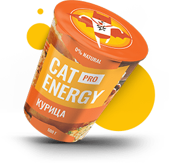
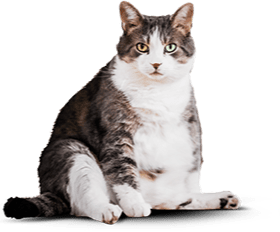

{% set pageId = 0 %}
{% set permalink = pages[pageId].path %}

<!DOCTYPE html>
<html class="page" lang="ru">
{% include "./templates/head.twig" %}

<body class="page__body">
  {% include "./templates/header.twig" %}

  <main class="page-main">
    <h1 class="page__hidden">Корма для котов от «Кэт энерджи».</h1>

    <section class="selection page-main_selection">
      <div class="selection__wrapper page__wrapper_center">
        <h2 class="selection__title">Функциональное<br>питание для котов</h2>
        <i class="selection__slogan">Занялся собой? Займись котом!</i>
        
        <a class="button selection__button-link" href="form.html">Подобрать программу</a>
      </div>
    </section>

    <section class="advantages page-main_advantages">
      <h2 class="page__hidden">Преимущества нашего питания.</h2>
      <div class="page__wrapper_center">
        <ul class="advantages__list">
          <li class="advantages__item advantages__item--slim">
            <h3 class="advantages__title">Похудение</h3>
            <p class="advantages__description">Ваш кот весит больше собаки и почти утратил способность лазить по деревьям? Пора на диету! Cat Energy Slim поможет вашему питомцу сбросить лишний вес.</p>
            <a class="advantages__button-link" href="#">Каталог slim</a>
          </li>
          <li class="advantages__item advantages__item--pro">
            <h3 class="advantages__title">Набор массы</h3>
            <p class="advantages__description">Заработать авторитет среди дворовых котов и даже собак? Серия Cat Energy Pro поможет вашему коту нарастить необходимые мышцы!</p>
            <a class="advantages__button-link" href="#">Каталог pro</a>
          </li>
        </ul>
      </div>
    </section>

    <section class="technologies">
      <h2 class="page__hidden">Технологии нашего питания.</h2>
      <div class="page__wrapper_center">
        <h3 class="technologies__title">Как это работает</h3>
        <ol class="technologies__list">
          <li class="technologies__item technologies__item--icon_leaf">
            <p class="technologies__description">Функциональное питание содержит только полезные питательные вещества.</p>
          </li>
          <li class="technologies__item technologies__item--icon_tub">
            <p class="technologies__description">Выпускается в виде порошка, который нужно лишь залить кипятком и готово.</p>
          </li>
          <li class="technologies__item technologies__item--icon_eat">
            <p class="technologies__description">Замените один-два приема обычной еды на наше функциональное питание.</p>
          </li>
          <li class="technologies__item technologies__item--icon_alarm">
            <p class="technologies__description">Уже через месяц наслаждайтесь изменениями к лучшему вашего питомца!</p>
          </li>
        </ol>
      </div>
    </section>

    <section class="compare">
      <h2 class="page__hidden">Сравнение результата.</h2>
      <div class="compare__wrapper page__wrapper_center">
        <div class="compare__wrapper_grid">
        <h3 class="compare__title">Живой пример</h3>
        <p class="compare__description">Борис сбросил 5 кг за 2 месяца, просто заменив свой обычный корм на Cat Energy Slim. Отличный результат без изнуряющих тренировок! При этом он не менял своих привычек и по-прежнему спит по 16 часов в день. </p>
        <div class="compare__container-list">
        <dl class="compare__effect-list">
          <div class="compare__effect-frame">
            <dt class="compare__effect-term">Cнижение веса</dt>
            <dd class="compare__effect-definition">5 Кг</dd>
          </div>
          <div class="compare__effect-frame">
            <dt class="compare__effect-term">Затрачено времени</dt>
            <dd class="compare__effect-definition">60 Дней</dd>
          </div>
        </dl>
        <dl class="compare__expenses-list">
          <dt class="compare__expenses-term">Затраты на питание:</dt>
          <dd class="compare__expenses-definition">15 000 Руб.</dd>
        </dl>
        </div>
        <div class="compare__range range">
          <figure class="compare__range-photos range__photos">
            <figcaption class="page__hidden">Сравнение кота Бориса до и после применения функционального питания «Кэт энерджи».</figcaption>
            <div class="compare__range-slider range__slider">
              
            </div>
            <div class="compare__range-slider range__slider">
              
            </div>
          </figure>
          <div class="compare__range-bar range__bar">
            <button class="compare__range-button range__button" type="button">Было</button>
            <div class="compare__range-scale range__scale"> <!--Прописать стили для полосы выбора диапазона-->
              <div class="compare__range-thumb range__thumb" hidden>
                <span class="page__hidden">Сравнить котов в разных состояниях, до и после.</span>
              </div>
            </div>
            <button class="compare__range-button range__button" type="button">Стало</button>
          </div>
        </div>
        </div>
      </div>
    </section>

  </main>

  {% include "./templates/footer.twig" %}
  </body>

</html>
